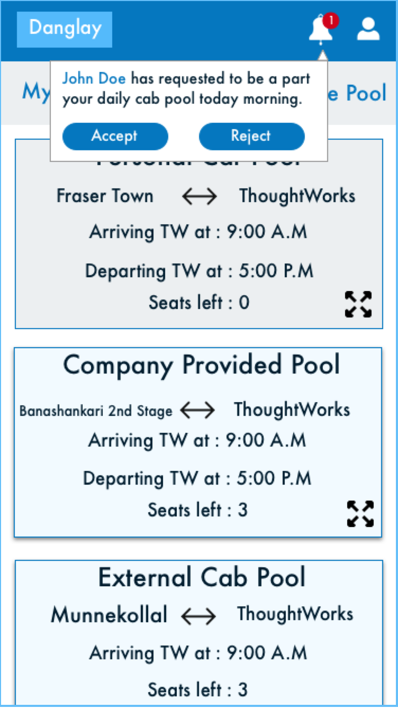
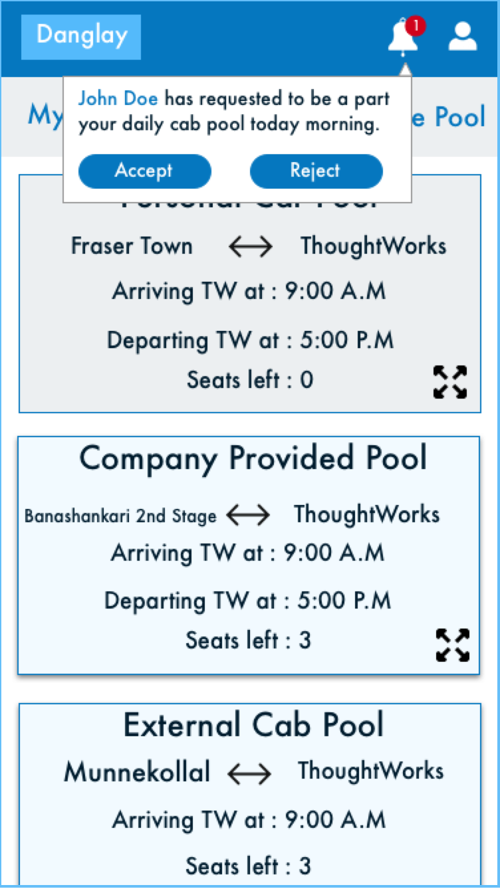

Car Pool Application - Danglay
Problem :
As a new joinee to the company, one of the questions I had was if anyone lived close to my place, someone I could travel to and from work with. Asking around it was evident that that a lot of people were looking for the same thing. People usually tried to solve this problem by sending out emails to the entire office asking for people. The problem with this method was that there was no way for new joinees to know of the emails that were sent out before and were forced to send one out again. The information was also not consolidated in a single place and was hard to find. This is why a few of us decided to create an application that could be used to find out information about fellow travellers.
Solution :
 →
→
 →
→

Roles played :
User journey creation, Development
Persona :
After asking around, and from our own experience, we were able to gather common points about the users of this application.
- Drives to work alone and looking for someone to share the ride.
- Has an Okta account.
- Willing to make small route and time adjustments to accommodate the travel partners.
User Journey :

Some of the initial wireframes created by me and another team member are below:

Learnings :
- Breaking down the solution we had into small tasks that can be done parallely. Breaking them up into smaller tasks allowed us to get feedback sooner and make any changes needed faster.
- Learning how to create wireframes.
- There were times when we got carried away with some ideas, but prioritising and figuring out what can be feasibly done, given the resource and time constraints was something that we came to learn.
- Set up of infrastructure of an application from scratch, including which tech stack to use, after careful consideration of multiple features like performance, necessity and cost.
- Ruby on rails.
- Bootstrap.
Future plans (Iteration 2) :
After feedback from users, we found that the things they would like to see in the future is to be able to book daily cabs. Keeping this in mind, I created some more mock ups, playing around with the UI a little more as well.


 

Iteration 3 :
More feedback on the above mockups led to the following learnings and implementations:
- Clunky visual design. People did not like the look and feel of the application.
- Having a seperate tab for 'Create a pool' didn't really make sense since most poeple were only doing this once in a while. This was changed to an easily available on the home page instead.
- The pop up notifications for 'request sent' was removed and the feedback was changed to be in the same place.
- The pop up notification for 'cab pool creation' was also removed and instead the user was just taken to their account page to show the completed creation.
- Most people did not understand what 'Point A' and 'Point B' meant in the route addition page for cabpool creation was, so this was replaced with colloquial language.
- People were creating pools and not deleting them if it was for just a one day use. This left a lot of unused pools in the search page. An option to set a date range on the pool was added, so the user could use this if they knew they wanted to use this for a certain period of time.
Keeping the above things in mind the following solution was created.


Trainline
Description :
A leading train ticket selling retailer in the UK.
Duration of Participation :
3 - 4 months.
Role played :
Developer
Learnings :
- It was a huge infrastructure and system and understanding this system in itself was a challenge, but once I was got a grasp on it, I was able to understand what goes into creating a stable infrastructure this huge.
- Along with the infrastructure, the codebase also was immense and legacy. Being on this project helped me to understand how to wade through this large codebase. I also learnt the importance of well designed code and test driven development, as it is clearly visible in large codebases like these where which require the code to be self - explanatory and easy to navigate.
- Half the team was located in a different country in a different time zone. Working on this project helped me to understand how to coordinate and work with the team remotely.
- I was able to get a peek into the retail industry and some of the business decisions that go into it.
- C#
- Team City
Operational Insights
Description :
The visualisation, bringing together and forecasting of all common operational information of ThoughtWorks in one place.
Duration of Participation :
1 year
Role played :
Developer, Shadow UX
Learnings :
- This project allowed us to be in close contact with the users, as they were all employees of the company itself. This resulted in receiving continual feedback from the users allowing us to modify the product as we went along and really driving us to make user centric decisions.
- I got chances to shadow the Experience Designer on the team and understand the design process. I also shadowed user interviews which gave me a chance to see how the user directly interacts with the product for their use cases and participated in design sprints.
- Understanding operational factors like revenue, gross margins, utilisation etc and how they factor into business decisions.
- The team adapted the Kanban Process after which we were able to visibly see the increased rate in delivery of features.
- The infrastructure went through a migration to Amazon Web Services(AWS) which gave me the opportunity to help set up the systems from scratch in a new environment.
- Building a Continuous Integration environment and Continuous Deployment pipelines from scratch using GO.
- Clojure (Functional Programming)
- Angular JS
- D3
- ClojureScript